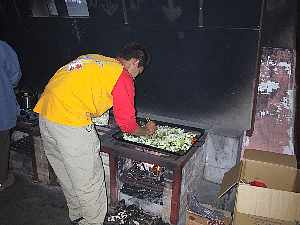

三ツ峠ハイク＆田貫湖畔宴会？ | ２００２，０４，２０−２１ |
 ボートをおろそうとして浸水！ | （コメント：キッカー） 今回の企画者は伝説の山男「のび太」だ〜！ この男の伝説で１ヶ月は腹抱える。 まっそれは、どうでも良いこととして、のび太に黙って勝手に食材を買い込んだ。ぞう＆私(きっかー）。農家のおばちゃん直持ち込みキャベツ、椎茸 etc。勢いに乗って、誰かのリクエストだったらしい「手羽先の？？？」ってやつを無視して、鳥のスパイシー？？？ってやつをカゴに入れた。 いや〜、一応のび太に許可らしきものは取った。 ここ、朝霧の道の駅では、朝飯抜きの空きっ腹は試食で満した。 ・・・焼きそば、焼き肉、ソーセージの数々、豆腐、牛乳（焼きそばおいしかった） 朝からラッキー、だから、今日は１日中ラッキーかと思った。 |
| 昼飯食べたら、田貫湖でボート乗り！！いたのは、のび太＆ぞう＆きっかー。 「最後は漕がせてよ〜」って、のび太が言った。 『あー普通の男だったらそれなりに漕げるだろう』と思った。 がっ・・・やっぱり、違う！替わったとたん・・・バチャッ、バチャッ 同じ場所でクルクル！前に進まず！ ２人は目が回った。（のびちゃんはボート漕いだこと無いんだって） あ〜恐ろしかった。運良く命辛々ボートから逃れる事が出来、すっかり眠くなった。・・・だから、きっかーは昼寝。 夕食の準備が始まり、のび太、べっしー、きっかーはぞうさんの使われの身となった。 |  富士宮焼きそばを制作中 |
 外で宴会！ | （ここから、ルイルイさんの手記） 朝霧道の駅に到着するや否や、のび太さんから地図を見せられ、「たぶん、このへんのセブンイレブンで待ってるから。はい、行ってらっしゃい！」と無情に、顔の知らない他のメンバーの元へ送り出された。 何とか、ヤフーの山の会（仮名）メンバー方々と合流。 可愛らしいご対面をしたかったのに、ルイルイ号の主張が強すぎ、夢破れる？（大丈夫！ビビッただけ） 三ツ峠は、あいにくの曇り空で景色は楽しめなかったけれど、皆でワイワイ、おしゃべりに花を咲かせながら登る。 買出しに行ってくれている某氏が、【伝説話】でハイキングに参加していたのは、驚き！楽しみにしていた富士山は見えず！ それから、待ち遠しかった昼食タ〜イム！なのに、なのに、３個買ったはずのおにぎりが、２個しかなーーい！・・・（ρ＿；） 信じられな〜い！（後で車の中で発見！） |